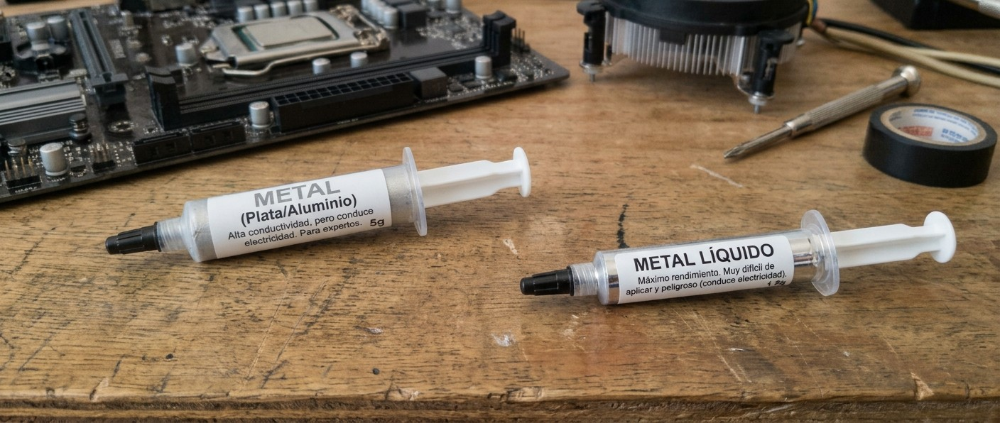

Agenda de la Presentación
01. El Procesador (CPU)
Partes internas, marcas (Intel/AMD) y tipos según su uso.
02. Calor y Pasta Térmica
Por qué se calienta, tipos de pasta y aplicación correcta.
03. Herramientas y Seguridad
Kit necesario y medidas antiestáticas antes de desarmar.
04. Mantenimiento Paso a Paso
Desensamblaje, limpieza, ensamblaje y comprobación final.


El Procesador (CPU): El Cerebro
La CPU (Unidad Central de Procesamiento) es el chip principal de la computadora. Interpreta y ejecuta las instrucciones de los programas y coordina todos los componentes del sistema. Se conecta a la placa base mediante el zócalo (socket) y su rendimiento se mide en núcleos, hilos y frecuencia (GHz).
- Realiza millones de operaciones por segundo.
- Genera calor, por eso necesita un disipador + pasta térmica.
- Es el componente que determina en gran medida la velocidad del sistema.


Partes Principales del Procesador

Unidad de Control (UC)
Dirige y coordina todas las operaciones del procesador.
Unidad Aritmético-Lógica (ALU)
Realiza operaciones matemáticas y lógicas.
Registros y Memoria Caché
Almacenamiento ultrarrápido para datos de uso inmediato.
Buses de Datos
Canales que transportan la información entre componentes.


Tipos de Procesadores según la Marca
INTEL
- Core i5 / Ultra 5: Gama baja / entrada.
- Core i7 / Ultra 7: Gama media.
- Core i9 / Ultra 9: Gama alta.
- Xeon: Servidores y estaciones de trabajo.
AMD
- Ryzen 5: Gama baja / entrada.
- Ryzen 7: Gama media.
- Ryzen 9: Gama alta.
- Threadripper / EPYC: Workstation y servidores.


Tipos de Procesadores según su Uso
Escritorio (Desktop)
Máximo rendimiento para gaming, edición y productividad. Intel Core / AMD Ryzen.
Servidores
Fiabilidad 24/7 y multitarea intensiva. Intel Xeon / AMD EPYC.
Móviles
Eficiencia energética para laptops y smartphones. ARM, Intel U-series.


¿Por qué se Calienta el Procesador?
Al ejecutar millones de operaciones por segundo, los transistores del CPU generan calor como subproducto. Sin una buena refrigeración, la temperatura sube y el rendimiento cae.
- Ventilación deficiente: gabinete cerrado o mal ubicado.
- Polvo acumulado: obstruye disipadores y ventiladores.
- Pasta térmica seca: pierde conductividad con el tiempo.
- Disipador defectuoso: ventilador o base en mal estado.
- Cargas exigentes: gaming, edición, renderizado.
- Overclocking: forzar el CPU más allá de sus límites.


Tipos de Pasta Térmica

Silicona
Económica y segura (no conduce electricidad). Bajo rendimiento térmico.[reference:1]
Cerámica
Buen equilibrio precio/rendimiento. No conductora. Recomendada para la mayoría.[reference:2]
Metal (Plata/Aluminio)
Alta conductividad, pero conduce electricidad. Para expertos.[reference:3]
Metal Líquido
Máximo rendimiento. Muy difícil de aplicar y peligroso (conduce electricidad).[reference:4]
¿Cuándo Cambiar la Pasta Térmica?
Regla general
Cada 1 a 3 años según el uso del equipo.[reference:5]
Señales de alerta
Temperaturas altas, ventilador ruidoso, apagados repentinos o lentitud.
Al desmontar
Siempre que retires el disipador, debes limpiar y reaplicar.


¿Qué Pasa si NO se Usa Pasta Térmica?
- Sobrecalentamiento rápido: el CPU llega a 90-100°C en segundos.
- Thermal Throttling: el sistema reduce la frecuencia para no quemarse.
- Apagados inesperados: protección automática del hardware.
- Daño permanente: en casos extremos, el procesador se quema.
- Vida útil reducida: el desgaste del chip se acelera.
Recomendaciones al Aplicar Pasta Térmica
- Limpia bien: retira la pasta vieja con alcohol isopropílico y paño sin pelusa.[reference:7]
- Cantidad exacta: grano de arroz o lenteja en el centro.[reference:8]
- No esparzas: la presión del disipador la distribuye sola.[reference:9]
- Instala el disipador: presión uniforme, sin moverlo en exceso.
- Verifica temperaturas: usa software como HWMonitor.[reference:10]
- No reutilices pasta: la pasta vieja pierde propiedades.


Herramientas para Desarmar una PC

Fase 1: Desensamblaje
- Retirar la tapa del gabinete (tornillos traseros).
- Desconectar cables de alimentación y datos.
- Retirar tarjetas de expansión (GPU) y memoria RAM.
- Retirar unidades de almacenamiento (HDD/SSD).
- Retirar la fuente de alimentación (¡no abrirla!).
- Retirar el disipador del CPU.
- Retirar la placa base (opcional, para limpieza profunda).


 Cables
Cables